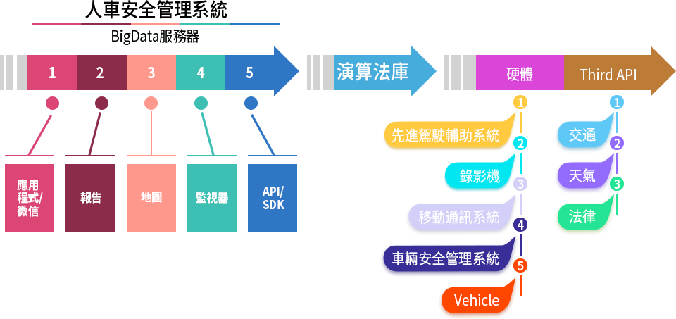

本系統為客戶提供基於駕駛安全、通行效率、路網路況資料獲取、分析的解決方案。
一、人車安全智慧雲系統
本系統集成了車輛GPS定位、車載視頻、主動安全技術、大資料統計分析技術，提供從駕駛員、車輛、路網到實際應用的運輸過程安全解決方案，有效地提升運輸行業的安全性、經濟性和時效性。
營運車輛安全管理系統包括以下部分：
- 1.營運車輛預警的管理；
- 2.營運車輛监控功能
- 3.營運車輛駕駛員人臉識別功能管理；
- 4.營運車輛歷史軌跡管理；
- 5.營運車輛定時定位查询管理；
- 6.營運車輛视频和图像監控管理；
- 7.營運車輛電子地圖管理。
平臺能夠與硬體緊密結合，在滿足各項標準的基礎上，擴展更多適用於公共車輛日常運輸的實用功能，幫助車隊、駕駛員瞭解駕駛過程，客觀評價駕駛行為，分析路段風險，讓平臺發揮價值，成為車隊管理的有效工具。
二、人車安全智慧雲方案
三、人車安全智慧雲方案特點
- 1.平臺的技術靈活、專業、高效、準確。
- 2.平臺自主研發，能夠提供全方面的定制化開發，具有技術支持完備，回應及時，技術能力充足等優勢；
- 3.平臺採用分散式運算架構，方便公司集中監管層面大量資料獲取、傳輸高效的要求，又能夠適應不同下屬車隊靈活使用的要求。
- 4.平臺採用容器化部署方案，提高維護效率；
- 5.平臺支持多用戶多首頁、多功能變數名稱功能
四、人車安全智慧雲方優勢
實現“一平臺操作、一張圖展示、一張表統計，一標準覆蓋”。
- 一平臺操作
- 通過同一個平臺既向政府部門提供監管服務，又能夠滿足企業日常生產經營所需的功能需求，通過功能模組的不同配置，服務不同的角色物件。
- 一張圖展示
- 利用電子地圖和資料視覺化技術，通過一個DataV資料大屏動態展示整個平臺的企業/車輛/駕駛員即時運行情況，對安全運行及違規運行情況進行即時預警，對違規行為干預處置結果進行即時回饋。
- 一張表統計
- 利用大資料分析及AI演算法模型，對於車輛運行情況、運輸效率、安全及違規駕駛行為等各項維度形成一張資料包表，為政府監管部門和企業管理者決策提供資料服務。
- 一標準覆蓋
- 相同的設備安裝標準、相同的行車安全考核標準、相同的作業規範考核標準，採用紅黃綠碼管理。